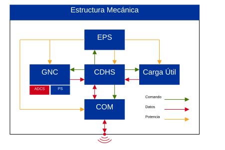

Universidad Nacional Autónoma de México Facultad de Ingeniería Unidad de Alta Tecnología
Inicio
Información general
Curso: Mecánica orbital
Clave: 1268
Semestre: 9
Créditos: 6
Horas por semana: 3
Modalidad: Teórica
Seriación: Ninguna
Objetivo del curso
El alumno aplicará los elementos de mecánica celeste a problemas prácticos del movimiento de naves espaciales.
¿Mecánica Orbital?
Astrodinámica
Presentación
Intereses académicos
Intereses profesionales
Método de titulación
Aficiones personales
Sobre mí
Laboratorio de Instrumentación Electrónica de Sistemas Espaciales (LIESE)
Instituto de Ingeniería, UNAM
Grupo de Modos Deslizantes, Posgrado de Ingeniería
Formación académica
Ingeniero Eléctrico Electrónico
Maestría en Ingeniería Eléctrica – Control
Información de contacto
Correo: guillermoocaan@gmail.com
LIESE, Edificio P, Facultad de Ingeniería, UNAM
Contenido del curso
Introducción
Geometría orbital y propagación
Movimiento relativo y observación
Maniobras orbitales
Perturbaciones
Movimiento rotacional1
Determinación de órbita2
Antecedentes
Álgebra lineal
Cálculo vectorial
Ecuaciones diferenciales
Análisis numérico
Matemáticas avanzadas
Probabilidad y estadística
Análisis de sistemas y señales
Modelado de sistemas físicos
Medio ambiente espacial
Modelado basado en diseño
Recomendaciones
Conocimientos básicos de programación, especialmente en MATLAB/Simulink.
Creación de documentos en LaTeX
Conocimientos sobre electrónica básica y manejo de tarjetas de desarrollo distintas a Arduino y ESP32.
Bibliografía
Classroom
Formato de entrega
Los documentos deberán ser entregados en formato PDF mediante Classroom.
El nombre del archivo deberá seguir el siguiente formato: MO_TipoyNúmero_ApellidoNombre.pdf, e.g., MO_T1_OcanaGuillermo.pdf
Tipo: Tarea (T), Proyecto(P), Examen(E).
La entrega es individual, incluso si el trabajo es en equipo.
Es obligatorio utilizar la plantilla en LaTeX que será proporcionada en cada actividad.
Introducción
Capítulo 1
Introducción
Introducción
Definiciones
▸ Definiciones
Mecánica
Definición
Rama de la física que estudia el movimiento y el equilibrio de los cuerpos, así como las fuerzas y las interacciones que determinan su estado de movimiento.
La mecánica responde dos preguntas fundamentales sobre el movimiento de los cuerpos: ¿Cómo y por qué se mueve un cuerpo?
La cinemática responde al cómo: describe la posición, velocidad y aceleración de los cuerpos sin considerar las causas que producen su movimiento.
La dinámica responde al por qué: estudia las causas del movimiento y relaciona el movimiento de los cuerpos con las fuerzas que actúan sobre ellos.
La estática, por su parte, estudia las condiciones de equilibrio de los cuerpos, es decir, las situaciones en las que la resultante de fuerzas es compatible con un movimiento nulo aparente.
Astronomía
Definición
Rama de la ciencia que estudia los cuerpos celestes, los fenómenos y procesos que ocurren en el universo, así como su origen, evolución, estructura y movimiento.
La astronomía busca responder preguntas fundamentales sobre el universo: ¿qué existe, cómo se comporta y cómo evoluciona?
La astrofísica aplica las leyes de la física para estudiar las propiedades y procesos físicos de los cuerpos y sistemas astronómicos.
Mecánica celeste
Definición
Rama de la mecánica que estudia el movimiento de los cuerpos celestes y las interacciones gravitacionales que determinan su evolución dinámica.
Se fundamenta principalmente en las leyes del movimiento de Newton y la ley de gravitación universal.
Estudia el movimiento de planetas, lunas, asteroides, cometas, estrellas y otros cuerpos celestes.
Considera tanto sistemas simples como sistemas formados por múltiples cuerpos que interactúan gravitacionalmente.
Permite describir y predecir fenómenos como órbitas, eclipses, encuentros entre cuerpos y perturbaciones gravitacionales.
Astrodinámica
Definición
Estudio del movimiento de objetos hechos por el ser humano en el espacio, sujetos tanto a fuerzas naturales como a fuerzas inducidas artificialmente.
Contempla tanto el movimiento traslacional como el movimiento rotacional de los objetos.
Las fuerzas naturales incluyen principalmente la gravedad, así como otras perturbaciones producidas por el entorno espacial.
Las fuerzas artificialmente inducidas son aquellas generadas deliberadamente para modificar el movimiento del vehículo, como las producidas por sistemas de propulsión.
La astrodinámica permite analizar, predecir y diseñar el movimiento de vehículos espaciales.
Mecánica orbital
Definición
Estudio del movimiento traslacional de objetos hechos por el ser humano en el espacio, sujetos tanto a fuerzas naturales como a fuerzas inducidas artificialmente.
Estudia las trayectorias traslacionales de cuerpos naturales con respecto de una referencia.
A las trayectorias periódicas se les conoce como órbitas.
Nos permite determinar y predecir la posición y velocidad de un cuerpo a lo largo de su trayectoria.
Analiza cómo las fuerzas gravitacionales y perturbaciones modifican el movimiento orbital.
Satélites
Satélite
Cuerpo u objeto que se encuentra en órbita alrededor de otro cuerpo debido a la interacción gravitacional entre ellos.
Satélite natural
Cuerpo celeste de origen natural que orbita alrededor de otro cuerpo celeste como consecuencia de su interacción gravitacional.
Satélite artificial
Objeto construido por el ser humano y colocado en órbita alrededor de un cuerpo celeste para cumplir una función determinada.
Importancia en la ingeniería
El diseño de un vehículo espacial no puede realizarse de manera independiente de la misión espacial que debe cumplir.
Misión espacial
Conjunto de actividades, sistemas y operaciones planificadas para alcanzar uno o más objetivos en el espacio, desde su lanzamiento hasta la finalización de la misión.
Antes de diseñar completamente el vehículo es necesario establecer qué se quiere lograr, dónde debe operar y cómo llegará hasta allí.
Todas las actividades de la misión deben ser pensadas alrededor de la carga útil del satélite.
La misión determina requisitos fundamentales del vehículo, como propulsión, energía, comunicaciones, navegación y estructura.
Dentro del diseño de la misión, la trayectoria determina cómo se desplazará el vehículo desde su estado inicial hasta alcanzar las condiciones requeridas para cumplir el objetivo.
Por ello, el diseño y análisis de trayectorias constituye un elemento esencial para el diseño de una misión espacial.
Subsistemas de un satélite

El diseño de la trayectoria se materializa en la práctica en diferentes sistemas y operaciones del vehículo espacial.
Despliegue
La trayectoria determina las condiciones y el momento en que el vehículo debe ser liberado, separado o desplegado de su vehículo lanzador o de otro sistema espacial.
Computadora de a bordo
Los modelos y algoritmos de propagación, control y determinación orbital permiten estimar la posición y velocidad del vehículo durante la misión.
Sistema de propulsión
Las maniobras diseñadas para modificar y controlar la trayectoria determinan los requisitos de impulso, dirección y momento de las actuaciones propulsivas.
Sistema de comunicaciones
La trayectoria determina la visibilidad del vehículo respecto a las estaciones terrestres, estableciendo condiciones para la planificación de enlaces, ventanas de comunicación y orientación de las antenas.
Introducción
Repaso de álgebra
▸ Repaso de álgebra
Vectores
Un vector (columna) es una \(n\)-tupla ordenada de números reales:
donde \(\mathcal{V}\) es un conjunto de vectores reales, \(+:\mathcal{V}\times\mathcal{V}\rightarrow\mathcal{V}\) y \(\cdot:\mathbb{R}\times\mathcal{V}\rightarrow\mathcal{V}\) satisfacen, para todo \(\vec{u},\vec{v},\vec{w}\in\mathcal{V}\) y \(\alpha,\beta\in\mathbb{R}\):
El determinante de una matriz cuadrada es un escalar asociado que puede interpretarse como una combinación alternada de todos los posibles productos de sus elementos. Por otro lado, el rango de una matriz es el número de sus columnas linealmente independientes. En el caso de matrices cuadradas, el rango de \(A\) es \(n\) si y solo si \(\det(A)\neq0\).
Matrices simétricas y antisimétricas
Sea \(A\in\mathbb{R}^{n\times n}\).
\(A\) es simétrica si
\[
A^\top=A.
\]
Ejemplo:
\[
A=
\begin{bmatrix}
a & b\\
b & c
\end{bmatrix}.
\]
Un marco de referencia provee un sistema cartesiano para expresar coordenadas de vectores en el espacio. Mediante estos, es posible describir la posición de un cuerpo.
En general, es necesario definir:
Un marco inercial.
Un marco sujeto al cuerpo.
Marcos auxiliares.
Marco de referencia inercial \(\ls{i}{\mathcal{F}}\)
Origen:\(\ls{i}{O}\), punto de referencia elegido para describir el movimiento.
Ejes:
\(\ls{i}{\vec{x}}\): eje de referencia elegido.
\(\ls{i}{\vec{y}}\): eje perpendicular que completa la base.
\(\ls{i}{\vec{z}}\): eje que completa la regla de la mano derecha.
Un marco de referencia inercial es aquel en el que un cuerpo sobre el que no actúa una fuerza neta permanece en reposo o se mueve con velocidad constante.
En un marco inercial, las leyes de Newton pueden aplicarse directamente sin necesidad de introducir fuerzas ficticias asociadas al movimiento del propio marco.
Nota
Algunos de los marcos inerciales más utilizados son:
Marco de referencia inercial geocéntrico (ECI, por sus siglas en inglés).
Marco de referencia celeste internacional (ICRF, por sus siglas en inglés).
Leyes de Newton
Primera ley
Un cuerpo permanece en reposo o en movimiento rectilíneo uniforme cuando la fuerza neta que actúa sobre él es cero.
donde \(\vec{v}\) es la velocidad traslacional del cuerpo.
Segunda ley
La fuerza neta que actúa sobre un cuerpo es igual a la razón de cambio temporal de su momento lineal.
\[
\sum\vec{f}=\frac{d\vec{\rho}}{dt},
\]
donde \(\rho=m\vec{v}\) y \(m\) es la masa del cuerpo.
Tercera ley
Cuando un cuerpo ejerce una fuerza sobre otro, este ejerce simultáneamente sobre el primero una fuerza de igual magnitud y dirección, pero en sentido opuesto.
\[
\vec{f}_{12}=-\vec{f}_{21}.
\]
Ley de gravitación universal
Ley de gravitación universal
Dos cuerpos con masas \(m_1\) y \(m_2\) se atraen con una fuerza cuya magnitud es proporcional al producto de sus masas e inversamente proporcional al cuadrado de la distancia entre sus centros:
donde \(G=6.674\times10^{-11}\:\mathrm{N\,m^2/kg^2}\) es la constante de gravitación universal y \(\vec{r}_{12}\) es el vector de posición desde el centro del masa del cuerpo 1 hasta el centro de masa del cuerpo 2.
La ley de gravitación universal constituye la base de la mecánica orbital y permite determinar la fuerza que existe entre dos cuerpos debido a su interacción gravitacional.
La fuerza gravitacional es una fuerza conservativa que depende únicamente de la posición relativa \(\vec{r}_{12}\), i.e., el trabajo realizado por la fuerza entre dos puntos es independiente de la trayectoria seguida.
En consecuencia, el trabajo realizado por la fuerza gravitacional a lo largo de una trayectoria cerrada es cero:
\[
\oint \vec{f}_{12}\cdot d\vec{r}_{12}=0
\]
La fuerza gravitacional es además una fuerza central, ya que actúa siempre a lo largo de la línea que une los centros de los dos cuerpos.